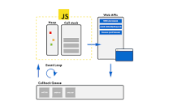

Question: 1. Differences between
map(), filter(), forEach() and find().
Answer: definition and usage:
✓
map():
does a wonder by creating a new array from calling a callback
function provided for every array element that it operates upon.
✓
map():
calls a callback function provided once for each of the array
elemnts it is operating upon.
✓
map():
does not execute the callback function provided on an empty array
elements.
✓
map():
does not change the origunal array it is operating upon.
✓
map() Syntax:
array.map(function(currentValue, index, arr), thisValue). Here
function() is required,
currentValue is required,
index and
arr are optional. By default
thisValue is undefined. If a value is passed it works as its
this value actually.
✓
filter():
Filter mthod crates a new array with elements that pass the test
provided by the function.
✓
filter():
Filter mthod does not execute on empty array elements.
✓
filter():
Filter mthod does not change the original array.
✓
filter() Syntax:
array.filter(function(currentValue, index, arr), thisValue). Here
function() is required,
currentValue is required,
index and
arr are optional. By default
thisValue is undefined. If a value is passed it works as its
this value actually.
✓
forEach():
forEach() mthod calls a function for each element in the array it
operates upon.
✓
forEach():
forEach() mthod does not execute on empty array elements.
✓
forEachforEach():
forEach() mthod does not return anythig. It means the return value
is undefined.
✓
forEach() Syntax:
array.forEach(function(currentValue, index, arr), thisValue). Here
function() is required,
currentValue is required,
index and
arr are optional. By default
thisValue is undefined. If a value is passed it works as its
this value actually.
✓
find():
find() method returns the first value of the element that passes the
test.
✓
find():
find() mthod executes a callback function on each array elements.
✓
find():
find() mthod does not execute the callback funtion for empty
elemnts.
✓
find():
find() mthod does not change the original array it operates upon.
✓
find() Syntax:
array.find(function(currentValue, index, arr),thisValue). Here
function() is required,
currentValue is required,
index and
arr are optional. By default
thisValue is undefined. If a value is passed it works as its
this value actually.
Question: 2. Differences between
localStorage, sessionStorage and cookie.
Answer: definition and usage:
✓
localStorage:
is a browser object. It allows to save data in key/value pairs in
json format in browser.
✓
localStorage:
data is not time or condition bound. The memory is not volatile.
Data is available irrespective of the opening and closing of the
browser in whch data is stored. This data is browser specific.
✓
sessionStorage:
is a browser object. It allows to save data in key/value pairs in
json format in browser. But unlike localStorage session storage data
is volatile. Closing the browser or signing out from the browser
removes all data stored in session storage. To be speciffic
expiration of a certain session means the expiration of the data
from the session storage.Data stored here is also browser and
session specific.
✓
cookie:
Cookie is a machenism of storing user information in web pages. It
keeps track of the data of the user for recognizing his/her
information for future as session data is session specific and
expires with the expiration of the user sesssion.
✓
cookie:
Cookie data is stored in small text files in the computer of the
user. When a connection is cut off from the server forgets
everything about the user. Cookie solves this problem of remembering
the user in future. On browser request for a web page from specific
server, cookie related to that page are added with the server
request and thus the ueser is recognized from the previously saved
cookie value.
Question: 3. Event loop.
Answer: definition and usage:
✓
Event loop:

✓
Event loop: manages synchronous and
asynchronous using callstack and queue. Event loop is a jasaScript
run time model which executes the code. It collects, processes
events and executes those events in queued sub tasks.
Heap/Stack:
In event looping objects are allocated in a heap of unstructured
large memory which is called heap / stack.
Queue:
A message queue is maintained in javaScript which contains the the
list of messages to be processed associated with a function of its
own to be cllled for message handling in order. In event looping at
some point the javascript runtime starts message handling from the
queue in the oldest message order. While doing so the message gets
removed from the queue and the corresponding function is called with
the message as an input parameter. Thus a function creates a stack
or heap frame new for the use of that function and this process
continues until the stack is empty and the event loop waits for the
new message to processed in queue. FIFO (first in first out )
principle is maintained here in event loop.